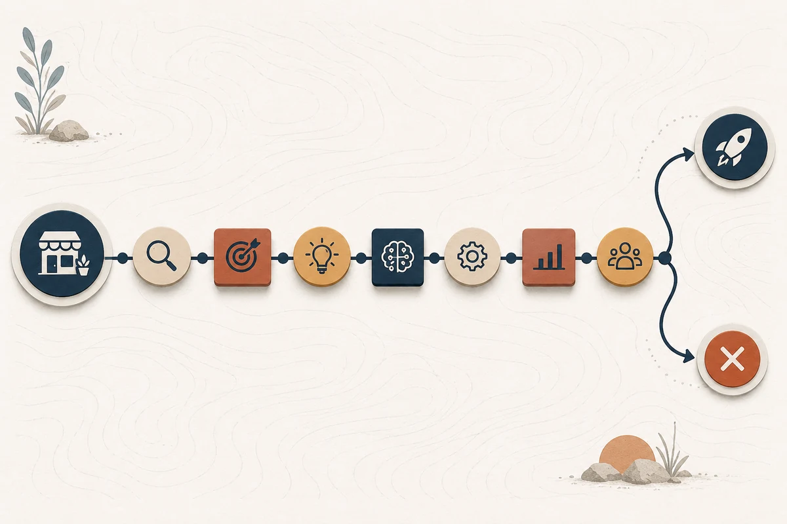

Гайд · ИИ для бизнеса
ИИ для малого бизнеса: с чего начать
Какой бюджет, какие сценарии и какие сроки реально подходят малому бизнесу для входа в ИИ в 2026 году. Развёрнутый кейс окупаемости, калькулятор пилота для пекарни и шесть критериев, когда лучше отложить запуск.
Автор · проверено 22 мая 2026 г.

Содержание
Краткое резюме
По неправительственной оценке Дмитрия Григоренко на форуме Data Fusion 2026, российский бизнес в 2025 году потратил на внедрение ИИ 257 млрд ₽, и большая часть этих денег пришлась на крупные компании. Малому бизнесу — от индивидуального предпринимателя с тремя сотрудниками до компании в 30–50 человек — такие бюджеты не нужны. Реалистичный первый шаг сегодня стоит 50–250 тыс ₽ на запуск и 8–25 тыс ₽ в месяц на поддержку. Этого достаточно, чтобы за 30–45 дней получить первый бизнес-результат в одном из четырёх сценариев: продажи, поддержка клиентов, маркетинг, документы.
| Сценарий | Что делает ИИ | Запуск пилота | Месяц поддержки |
|---|---|---|---|
| Продажи: ответы на входящие заявки | классифицирует лид, пишет первое сообщение, предлагает время для звонка | 60–200 тыс ₽ | 8–20 тыс ₽ |
| Поддержка: ответы по базе знаний в Telegram/чате | отвечает по типовым вопросам, эскалирует сложные оператору | 80–250 тыс ₽ | 12–25 тыс ₽ |
| Маркетинг: контент для соцсетей и рассылок | генерирует посты, заголовки, описания, варианты офферов | 30–120 тыс ₽ | 5–15 тыс ₽ |
| Документы: типовые акты, договоры, КП | заполняет шаблоны по данным из таблицы или CRM | 50–180 тыс ₽ | 6–18 тыс ₽ |
Для российского малого бизнеса локальные тарифы GigaChat и YandexGPT доступны без VPN, а большинство сценариев укладывается в требования 152-ФЗ при правильной архитектуре доступа. Базовый ход внедрения — отдельный гайд: как внедрить ИИ в бизнес в 2026 году. Полный разбор стоимости — в гайде сколько стоит внедрение ИИ в компанию.
Главная мысль: малому бизнесу выгоднее один узкий процесс с ИИ через 30 дней, чем абстрактная «цифровизация» на полгода.
Gartner ещё в июле 2024 года предупреждал, что не менее 30% проектов генеративного ИИ будут остановлены после проверки концепции к концу 2025 года. У малого бизнеса эта цифра выше из-за слабых данных, размытой ответственности и попытки автоматизировать слишком сложный сценарий первым.
Практический следующий шаг
Выберите один процесс с повторяемостью больше 50 раз в месяц
Если непонятно, какой именно сценарий брать первым, имеет смысл разложить ваш процесс на данные, метрику и стоимость операции до старта пилота.
Оставить заявку на разборПочему 2026 год подходит малому бизнесу для входа в ИИ
Раньше у малого бизнеса было два варианта: брать ChatGPT/Claude по личной подписке и работать руками, либо заказывать индивидуальную разработку за миллионы рублей. В 2026 году появилась рабочая середина:
- Конструкторы автоматизации (Make, n8n, Albato) позволяют связать форму на сайте, CRM, Telegram и модель GigaChat или YandexGPT за 2–4 недели работы одного специалиста, без штатного программиста.
- Локальные модели для юрлиц (GigaChat API, YandexGPT в Yandex AI Studio) тарифицируются по токенам в рублях, работают по договору с российским юридическим лицом и снимают вопрос «куда уходят данные клиентов».
- Базы знаний поверх моделей (RAG-сборки) собираются в готовых инструментах: бот отвечает по вашему регламенту, прайс-листу или базе FAQ, а не «как ему хочется».
- Шаблонные сценарии известны и описаны: продажи, поддержка, контент, документы. Малому бизнесу не нужно изобретать новый класс задач — достаточно повторить рабочий шаблон под себя.
Это не значит, что ИИ автоматически выгоден любому малому бизнесу. Часть процессов — слишком уникальные или редкие, часть — попадает под регуляторные риски, часть — лучше оставить человеку. Поэтому первый шаг — аккуратный выбор сценария до любых попыток запуска.
Четыре сценария, где ИИ работает у малого бизнеса прямо сейчас

Продажи: первый ответ на заявку за минуты
Кому подходит: онлайн-школа, B2B-сервис, агентство, локальный сервис с заявками через формы, мессенджеры и партнёрский трафик.
Что делает ИИ:
- читает входящую заявку и понимает контекст (отрасль, источник, тип задачи);
- классифицирует лид по 3–5 признакам (горячий / тёплый / нерелевантный, готовность обсуждать сейчас);
- пишет короткое первое сообщение по шаблону компании;
- предлагает 2–3 даты для звонка или встречи, исходя из календаря владельца;
- передаёт менеджеру карточку с готовым контекстом.
Что остаётся за человеком: финальное решение, кому звонить первым, и сам звонок.
Эффект, которого реально добиться за 30–45 дней: время до первого ответа клиенту падает в 8–15 раз, конверсия в звонок или встречу растёт на 8–15 процентных пунктов. Если эффект меньше — пилот закрывается без перехода в рабочий запуск.
Поддержка: ответы по базе знаний без расширения штата
Кому подходит: интернет-магазин, инфо-продукт, локальный сервис, любая компания с повторяющимися вопросами клиентов.
Что делает ИИ:
- отвечает в Telegram-боте, виджете на сайте или в чате CRM по утверждённой базе знаний;
- понимает 60–80% типовых вопросов (статус заказа, тариф, возврат, условия, инструкция);
- передаёт сложные случаи оператору с готовой историей переписки;
- пишет лог: что спросили, что ответил, чем закончилось.
Что остаётся за человеком: ведение базы знаний, разбор спорных ответов, эскалация при жалобах и юридически значимых обращениях.
Эффект: время первого ответа становится секундами в любое время суток; оператор тратит время только на нестандартные обращения. Главный риск — уверенный ответ за пределами базы знаний. Поэтому базу собирают до запуска, и бот отказывается отвечать там, где нет данных.
Маркетинг: контент-поток для соцсетей и рассылок
Кому подходит: предприниматель, который сам ведёт ВКонтакте, OK, Telegram-канал и рассылки, либо маркетолог-одиночка.
Что делает ИИ:
- генерирует варианты постов, заголовков, описаний, офферов на основе ваших брендовых правил;
- адаптирует один материал под разные форматы (длинный пост, короткий, рассылка, рекламное объявление);
- предлагает варианты заголовков для теста в Яндекс.Директ или ВКонтакте Реклама;
- собирает черновики ответов на типовые комментарии и отзывы.
Что остаётся за человеком: смысл, тон, фактчекинг, окончательная редактура, публикация.
Эффект: контент-поток ускоряется в 2–4 раза; владелец получает варианты, из которых выбирает, а не пишет с нуля. Главный риск — пустой генеративный текст без смысла; чтобы его избежать, в инструкции для модели прописывают конкретные правила и примеры брендовых постов.
Документы: типовые акты, договоры, КП
Кому подходит: бухгалтер на ИП, юрист на аутсорсе, агентство с типовыми договорами, поставщик услуг с КП-конструктором.
Что делает ИИ:
- собирает типовой документ по шаблону из данных в CRM, форме или таблице;
- проверяет заполненный документ против правил (нужные реквизиты, корректные даты, типовые ошибки);
- готовит коммерческое предложение под клиентский запрос по 3–5 параметрам;
- подсвечивает спорные пункты для проверки человеком.
Что остаётся за человеком: финальная проверка, подпись, юридически значимые решения.
Эффект: время на типовой документ сокращается с 30–60 минут до 3–8 минут. Главное правило — для юридически значимых документов ИИ предлагает, человек утверждает. Без этого правила риск ошибки выше экономии.
С чего начать: 7 шагов первого пилота за 30 дней

Подходит для любого из четырёх сценариев.
- Выберите один процесс, который повторяется не реже 50 раз в месяц и у которого вы знаете текущую стоимость в часах работы сотрудников. Если такого процесса нет — пилот рано.
- Зафиксируйте одну метрику, которую должен изменить ИИ: время первого ответа, конверсия в звонок, доля типовых обращений без оператора, время на типовой документ.
- Соберите данные: 100–300 примеров реальных входов и желаемых выходов (заявки, обращения, документы, посты). Без этого этапа модель не понимает ваших правил.
- Назначьте владельца результата. Один человек в компании отвечает за метрику пилота. Это должен быть конкретный сотрудник или сам владелец, а не «ИТ» или «маркетинг» вообще.
- Поставьте лимит расходов на API и алерт при его превышении: 5–15 тыс ₽/мес для модели и 10–30 тыс ₽/мес на сервисы автоматизации. Это снимает риск неожиданного счёта.
- Запустите узко: один сценарий, один канал, режим «человек видит вердикт ИИ и принимает финальное решение». 30 дней работы в этом режиме.
- Примите решение stop/go на 31-й день: метрика выросла → масштабируем на соседние сценарии; не выросла → закрываем пилот без перехода в рабочий запуск, фиксируем выводы для следующего захода.
Подробный разбор каждого этапа — в опорном гайде как внедрить ИИ в бизнес в 2026 году.
Кейс: ИИ-ассистент по входящим заявкам для онлайн-школы английского
Ситуация. Онлайн-школа английского из Санкт-Петербурга: владелец, методист, два менеджера продаж, преподаватели на договоре. Заявки приходят через ВКонтакте, Instagram*, форму на сайте и партнёрский трафик — в сумме 240 заявок в месяц. Менеджеры читают каждую заявку, смотрят источник, оценивают теплоту, пишут первое сообщение и предлагают пробный урок. Среднее время до первого ответа клиенту — 4 часа 20 минут, конверсия из заявки в пробный урок — 26%.
Что делает ИИ. Классифицирует заявку по 5 признакам (источник, уровень английского, цель обучения, бюджетная категория, готовность начать в течение недели), пишет первое сообщение с приветствием и тремя вариантами времени для пробного урока, оставляет менеджеру карточку с готовым контекстом. Решение «писать сейчас или подождать» остаётся за менеджером, но 80% заявок уходят в обработку автоматически.
Что нужно для пилота.
- выгрузка 6 месяцев истории заявок и исходов из CRM (≈ 1 400 примеров);
- 250 размеченных вручную примеров «горячая / тёплая / нерелевантная / спам»;
- 6 шаблонов первого сообщения под разные источники и цели;
- доступ к календарю менеджеров для предложения слотов;
- лимит 8 тыс ₽/мес на GigaChat API и алерт при превышении;
- режим «менеджер видит вердикт и сообщение, может отменить или поправить».
| Статья запуска | Ориентир |
|---|---|
| Разметка примеров и шаблонов | 30–60 тыс ₽ |
| Подключение GigaChat API и инструкций | 25–50 тыс ₽ |
| Связка с CRM, формами и календарём через Make | 30–80 тыс ₽ |
| Тестирование на 100 свежих заявках | 15–30 тыс ₽ |
| Итого запуск | 100–220 тыс ₽ |
| Поддержка, API, обновления шаблонов в месяц | 12–22 тыс ₽ |
Метрики пилота через 45 дней.
- время до первого ответа: 4 ч 20 мин → 11 мин;
- доля заявок с ответом в первые 30 минут: 18% → 86%;
- конверсия из заявки в пробный урок: 26% → 37%;
- средняя точность классификации (по выборке 200 заявок): 84%, ложноположительных «горячих» — 9%;
- время менеджера на разбор входа: 6 ч/день → 1,5 ч/день, освободившиеся часы — на возвратные звонки и работу с клиентами после пробного урока.
Бизнес-логика. При среднем чеке школы и текущем объёме заявок прирост конверсии в пробный урок на 11 п.п. покрывает запуск за 2–3 месяца. Если бы конверсия не выросла или точность ИИ-вердикта упала ниже 70%, владелец закрывает пилот, не переходит в рабочий контур и фиксирует, что мешало. В кейсе пилот перешёл во второй этап: те же шаблоны для возвратных касаний после первого пробного урока.
Контекст по выбору метрики и проверке гипотез в продажах — в опорном гайде как внедрить ИИ в бизнес в 2026 году и в новостной ленте категории «ИИ-индустрия».
Деятельность Meta признана экстремистской и запрещена на территории РФ.
Калькулятор: сколько стоит первый пилот ИИ для пекарни
Ситуация. Пекарня в Казани с доставкой через свой сайт и Wildberries: владелец, два кассира, четыре пекаря, курьер на договоре. Заказы — 80 в день в среднем, 90% повторяющиеся вопросы клиентам про ингредиенты, сроки доставки, варианты упаковки и тарелочные наборы. Владелец сам ведёт Telegram-канал, отвечает на сообщения в свободное время.
Данные пилота.
- объём входящих обращений: 500 в неделю (Telegram + ВКонтакте + сайт);
- средняя длина ответа модели: 200 токенов;
- текущая стоимость операции: владелец и старший кассир суммарно тратят 3 часа в день на ответы клиентам × 26 рабочих дней × 350 ₽/ч условной стоимости часа = 27 300 ₽/мес;
- сценарий пилота: бот в Telegram отвечает по базе FAQ (ассортимент, сроки, упаковка, доставка), эскалирует сложные обращения владельцу.
Формула запуска.
| Статья | Расчёт | Сумма |
|---|---|---|
| Сборка FAQ и базы знаний из переписок | 20 часов × 1 200 ₽/ч | 24 000 ₽ |
| Настройка GigaChat + Make/n8n | флэт-стоимость подрядчика | 28 000 ₽ |
| Связка с Telegram-ботом и админкой | флэт-стоимость подрядчика | 18 000 ₽ |
| Тестирование 200 типовых вопросов | 10 часов × 1 200 ₽/ч | 12 000 ₽ |
| Резерв 15% | (24+28+18+12) × 0,15 | 12 300 ₽ |
| Итого запуск | 94 300 ₽ |
Формула месяца.
| Статья | Расчёт | Сумма |
|---|---|---|
| GigaChat API | 500 обращ. × 4 нед × 200 ток × 3 ₽ / 1 000 ток | 1 200 ₽ |
| Make/n8n тариф | базовый плейн с запасом по операциям | 2 600 ₽ |
| Поддержка и обновление FAQ | 6 ч × 1 200 ₽/ч | 7 200 ₽ |
| Резерв 15% | (1,2+2,6+7,2) × 0,15 | 1 650 ₽ |
| Итого месяц | 12 650 ₽ |
Результат. Запуск 94 300 ₽, ежемесячно 12 650 ₽. Сравниваем с текущей стоимостью операции 27 300 ₽/мес: ежемесячная экономия 14 650 ₽ при условии, что бот закрывает 60% обращений.
Окупаемость. 94 300 ₽ / 14 650 ₽ ≈ 6,4 месяца до выхода в ноль. С учётом того, что освобождённые часы владельца направлены на новые точки продаж (Авито, маркетплейсы), реальный срок окупаемости короче.
Выводы.
- Для малого бизнеса калькулятор имеет смысл считать честно, включая стоимость часа владельца, а не только подрядчика.
- Главные риски: бот «уверенно» отвечает не по базе знаний; FAQ устаревает и владелец не обновляет; объём обращений ниже расчётного и пилот не окупается за 12 месяцев.
- Если калькулятор показывает срок окупаемости больше 12 месяцев — пилот лучше отложить и сначала разобрать тот же сценарий вручную, без модели.
Развёрнутый разбор каждой статьи бюджета для бизнеса любого размера — в гайде сколько стоит внедрение ИИ в компанию.
Когда нужен внешний взгляд
Проверьте окупаемость своего сценария до подрядчика
Полезно сначала разложить бюджет на данные, интеграции, время владельца и поддержку, чтобы пилот не съел экономию.
Обсудить проектКакие инструменты ИИ выбрать малому бизнесу на первом шаге
Универсального ответа нет, но есть короткий список рабочих связок по задачам. Тарифы проверены на 22 мая 2026 года; финальная стоимость зависит от выбранного плана и объёма запросов.
| Задача | Локальная связка | Зарубежная связка | Когда выбирать локальную |
|---|---|---|---|
| Базовая модель для текста | GigaChat API, YandexGPT через Yandex AI Studio | OpenAI API, Anthropic Claude | если данные клиентов под 152-ФЗ, оплата по российскому юрлицу, без VPN |
| Связка процессов и интеграции | Albato, n8n self-hosted | Make, Zapier | если важен договор с РФ-юрлицом и хранение в РФ |
| Чат-бот в Telegram/ВК | BotKit/SaleBot + GigaChat | Custom + OpenAI | если основной канал — российские соцсети |
| Контент для соцсетей | YandexGPT + Brand voice | ChatGPT Plus | если бренд завязан на ВКонтакте, OK, Дзен |
| База знаний поверх модели | RAG на YandexGPT | RAG на OpenAI/Anthropic | если документы содержат персональные данные |
Главный практический критерий — наличие договора с российским юрлицом и понятной поддержки. Для большинства задач малого бизнеса GigaChat и YandexGPT достаточно по качеству ответов; разница с OpenAI/Anthropic заметна в сложных аналитических задачах, которые малому бизнесу обычно не нужны на первом пилоте.
Подробный разбор регуляторных и инфраструктурных нюансов локальных моделей — в разделе сайта «ИИ в России».
Когда внедрение ИИ малому бизнесу не окупится
Ниже — конкретные критерии, при которых пилот стоит отложить. Это сокращённый список, а не общий перечень рисков.
- Меньше 50 повторяющихся однотипных задач в месяц. Если у вас 20 заявок или 15 документов — настройка ИИ съест больше, чем сэкономит. На таких объёмах быстрее работают шаблоны в таблице и личное участие владельца.
- Нет владельца результата. Когда «ИИ-проект» подвешен между внешним подрядчиком, маркетингом и владельцем без явной ответственности за метрику, бюджет уходит, а решение «продлевать или гасить» никто не принимает. В малом бизнесе владелец обязан быть владельцем метрики.
- Процесс меняется чаще одного раза в месяц. Если ассортимент, тарифы, регламенты или правила меняются каждые две недели, поддержка модели и базы знаний съест ожидаемую экономию. Сначала стабилизируйте процесс, потом автоматизируйте.
- Регуляторно-чувствительный сценарий. Кредитные решения, кадровые увольнения, медицинские рекомендации, юридические заключения, обработка спецкатегорий персональных данных под 152-ФЗ — не первые проекты для малого бизнеса. Слишком высокая цена ошибки и слишком сложная архитектура согласований.
- Премиум-ниша, где клиент ждёт именно человека. Бутиковый сервис, индивидуальный консалтинг, высокий чек — клиент часто платит за персональное внимание. Автоматический ответ убивает позиционирование. ИИ здесь полезен только в бэк-офисе, не в коммуникации с клиентом.
- Нет 20 свободных часов владельца на 30 дней. Пилот требует участия владельца: выбор процесса, разметка, проверка качества, решение stop/go. Если владелец перегружен оперативкой и не может выделить время, пилот зависнет независимо от подрядчика.
Если вы попадаете в один из пунктов 1, 2, 3 или 6 — пилот стоит отложить, ограничиться личной подпиской на ChatGPT или GigaChat и поработать с инструментом руками. Это бесплатнее и быстрее снимает иллюзии. К внедрению можно вернуться через 3–6 месяцев, когда условия изменятся.
Российский контекст: 152-ФЗ, локальные модели и каналы
Малому бизнесу удобно строить первый пилот целиком в российском контуре. Решение здесь практическое — меньше юридических рисков и проще объяснить клиенту, как хранятся его данные.
- 152-ФЗ. Если бот или модель обрабатывают имена, телефоны, email, адреса, заказы или переписку клиентов — это персональные данные. Базовое правило: договор с поставщиком должен быть заключён с российским юрлицом, хранение — в РФ или в инфраструктуре с российским оператором обработки. GigaChat и YandexGPT по умолчанию закрывают этот вопрос; OpenAI/Anthropic — нет, без отдельной архитектуры.
- Локальные модели. GigaChat API и YandexGPT тарифицируются по токенам в рублях, оплата по счёту от российского юрлица, без VPN. Для большинства задач малого бизнеса качества ответов достаточно.
- Каналы коммуникации. Основные точки контакта малого бизнеса с клиентом — Telegram, ВКонтакте, OK, Авито, Wildberries. Все они интегрируются через Make, n8n или Albato; готовых сценариев в открытых базах достаточно.
- Маркетинг. Реклама в Яндекс.Директ и ВКонтакте Реклама — основные платные каналы. ИИ полезен для генерации тестовых заголовков и описаний, но финальная настройка кампаний остаётся за маркетологом или владельцем.
- Бухгалтерия и документы. 1С остаётся центральной системой для большинства малых компаний. Большинство современных конструкторов автоматизации имеют готовые коннекторы к 1С — это снимает значительную часть интеграционной работы.
Вывод Malakhov AI
Для малого бизнеса ИИ в 2026 году — это одна точечная замена ручного процесса на проверенный шаблон в одном из четырёх кластеров: продажи, поддержка, маркетинг или документы. «Цифровая трансформация» как формулировка здесь скорее мешает: она тянет на полугодовой проект там, где можно обойтись пилотом за 30 дней.
Рабочая последовательность короткая:
- Выбрать один процесс с повторяемостью больше 50 раз в месяц.
- Зафиксировать одну метрику.
- Собрать 100–300 примеров входов и выходов.
- Запустить пилот за 30 дней с лимитом расходов и режимом «человек принимает финальное решение».
- Решить stop/go на 31-й день.
Главная статья экономии у малого бизнеса — время владельца и одного-двух ключевых сотрудников. Главный риск — попытка автоматизировать слишком сложный или слишком уникальный процесс первым. Маленький, скучный, повторяющийся сценарий побеждает амбициозный почти всегда.
Если калькулятор показывает срок окупаемости больше 12 месяцев или вы попадаете под пункты counter-strategy выше — лучше отложить пилот, а первые 3 месяца поработать с ChatGPT, GigaChat или YandexGPT по личной подписке. Это снимает иллюзии и обходится в стоимость подписки.
FAQ
С какого бюджета малому бизнесу реально стартовать с ИИ?
От 50–100 тыс ₽ на запуск и 8–15 тыс ₽ в месяц для пилота на конструкторах автоматизации (Make, n8n, Albato) с базой знаний и одним сценарием. Этого достаточно, чтобы за 30–45 дней получить первый бизнес-результат. Полная разработка с интеграциями обычно начинается от 200–250 тыс ₽ запуска и 18–25 тыс ₽/мес поддержки.
Что выбрать — GigaChat, YandexGPT или ChatGPT?
Для большинства задач малого бизнеса в России — GigaChat или YandexGPT. Они тарифицируются в рублях, работают без VPN, заключают договор с российским юрлицом и снимают вопрос 152-ФЗ. ChatGPT Plus или Claude удобны для личной работы владельца, но как продуктовая основа — сложнее и дороже в части юридической архитектуры.
Безопасно ли отдавать ИИ переписку с клиентами по 152-ФЗ?
Безопасно, если поставщик модели — российское юрлицо с хранением данных в РФ, договор оформлен на компанию, доступ ограничен по ролям и есть журнал обращений. GigaChat и YandexGPT по умолчанию подходят. Для спецкатегорий персональных данных (медицина, кредитные истории) нужна отдельная архитектура и юрист.
Сколько времени владельца уйдёт на пилот?
В среднем 20–30 часов за 30 дней: выбор процесса, разметка примеров, проверка качества, решение stop/go. Большую часть времени съедает внутренняя работа, подрядчик отнимает её меньшую часть: «что мы считаем горячей заявкой», «как должен звучать первый ответ», «что считаем ошибкой». Без этих часов пилот зависнет.
Можно ли обойтись вообще без подрядчика?
Да, если владелец готов потратить 40–60 часов на разбор Make или n8n и сборку базы знаний руками. Это реальный путь для предпринимателя с техническим бэкграундом. Если бэкграунда нет — подрядчик за 80–150 тыс ₽ экономит 1,5–2 месяца времени владельца.
Подходит ли ИИ для маркетинга в ВКонтакте и Telegram?
Да, для генерации вариантов постов, заголовков, описаний и адаптации одного материала под разные форматы. Финальная редактура и публикация остаются за человеком — пустой генеративный текст без смысла снижает охваты. Полезное правило: модель даёт 5–10 вариантов, человек выбирает один и доводит.
Когда лучше отложить пилот?
Если повторяющихся задач меньше 50 в месяц, нет владельца метрики, процесс меняется чаще раза в месяц, у владельца нет 20–30 часов на 30 дней, сценарий — регуляторно-чувствительный или клиенты платят именно за персональное внимание. В этих случаях пилот съест бюджет без эффекта.
Какой первый сценарий выбрать, если непонятно, с чего начать?
Возьмите процесс, на который вы или ключевой сотрудник тратите больше 5 часов в неделю и который состоит из повторяющихся однотипных шагов. Если такого процесса нет — у вашего бизнеса либо ещё нет масштаба, либо процессы недостаточно стандартизированы. В обоих случаях ИИ — не первое решение.
Источники и данные
Цены и тарифы в инструментах ИИ быстро меняются. Этот материал подготовлен как практический ориентир для малого бизнеса; тарифные факты проверены 22 мая 2026 года.
- CNews / Data Fusion 2026. Неправительственная оценка Дмитрия Григоренко: российский бизнес в 2025 году потратил на внедрение и применение ИИ 257 млрд ₽: https://www.cnews.ru/news/top/2026-04-08_dmitrij_grigorenko_biznes_1
- Gartner, июль 2024. Прогноз, что не менее 30% проектов генеративного ИИ будут остановлены после проверки концепции к концу 2025 года: https://www.gartner.com/en/newsroom/press-releases/2024-07-29-gartner-predicts-30-percent-of-generative-ai-projects-will-be-abandoned-after-proof-of-concept-by-end-of-2025
- GigaChat API для юрлиц, обновлено 18 мая 2026. Тарифы pay-as-you-go и пакеты токенов: https://developers.sber.ru/docs/ru/gigachat/tariffs/legal-tariffs
- Yandex AI Studio, правила тарификации YandexGPT. Стоимость моделей по режимам и токенам: https://aistudio.yandex.ru/docs/ru/ai-studio/pricing.html
- Make pricing. Кредитная модель, тарифные планы и лимиты: https://www.make.com/en/pricing
- n8n pricing. Тарифы и варианты hosted / self-hosted: https://n8n.io/pricing/
- Albato pricing (RU-резидент). Российский конструктор интеграций: https://albato.ru/pricing
- 152-ФЗ «О персональных данных». Сводный текст и комментарии Роскомнадзора: https://rkn.gov.ru/personal-data/
Дальше
Что можно сделать после чтения
AI-новости в Telegram
Ежедневный короткий дайджест: релизы, инструменты, кейсы внедрения ИИ в бизнес.
Подписаться на дайджестАрхитектурный разбор ИИ
Проверьте процесс, данные, риски и экономику до старта разработки.
Оставить заявкуЧто читать дальше
Связанные разделы
Как внедрить ИИ в бизнес в 2026 году
Опорный гайд по выбору первого проекта с ИИ, данным, экономике и рискам.
Сколько стоит внедрение ИИ в компанию
Бюджет, статьи расходов, калькулятор пилота и рабочего запуска.
ИИ в России
Новости российского рынка ИИ, государственные инициативы, модели и кейсы компаний.
По теме